<link rel="stylesheet" href="../css/styles.css">
 
<main>
        <h2>Types of Abuse</h2>
        <p>
           Signs of abuse can often be difficult to detect. 
           This page aims to help people who come into contact with people with care and support needs to identify abuse and recognise possible indicators. 
           Many forms of abuse are also criminal offences and should be treated that way. <br>
           <br>
        1. The user inputs a valid URL to launch the Education Module and the URL is : 
            <a target="_blank" href=https://happy-grass-02e46c50f.6.azurestaticapps.net/typesofabuse>Types of Abuse</a> <br>
        2. The Types of Abuse module displays the content and the different types of abuses<br> 
           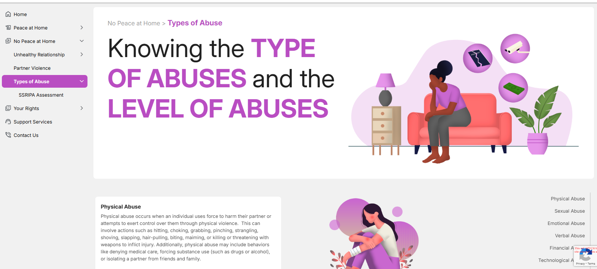 <br><br>
           The Admin user must access the CMS site in order to add, edit, and update the material on the page..<br><br>
           Go to CMS > Content Manager > Select and open the 'TypesofAbuseTitle' under the Single type from the side menu.<br>
           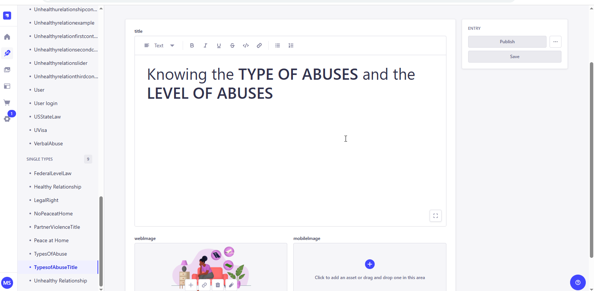 <br>
           Update the content if required and Click on Publish to make the changes refelects in the application. <br>
        <h4><b><u>Types of Abuses</u> </b></h4>  
        4. Domestic violence or abuse can be characterised by any of the indicators of abuse outlined in this briefing relating to Abuses that are listed in the application.<br> 
           Physical Violence <br>
           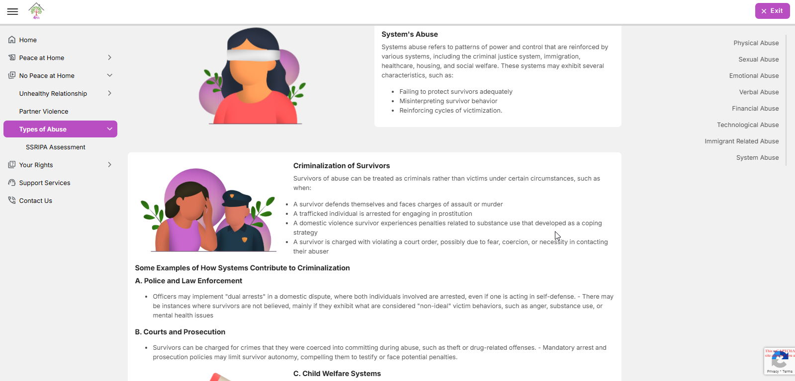 <br><br>
           <u>New Entry / Update the Images of the  Content.</u><br>
           For add or updating the imaged Go to CMS > Control Manager > Select and open 'TypesOfAbuse' > Click and open the related abuse and do the changes<br>      
           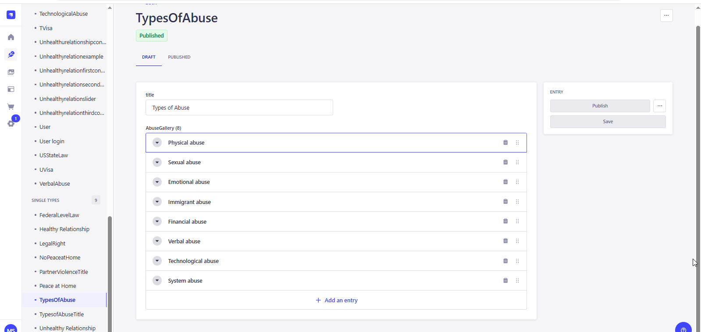 <br>
           <u>New Entry / Update the  Content.</u><br>
           For the add or updating the Content > Go to CMS > Control Manager > Select and open 'TypesOfAbuse' > Click on Create new Entry for adding the new detail,
           or open the exisiting content, update and save it. <br>    
            <u>a. Physical Abuse   </u> <br>
            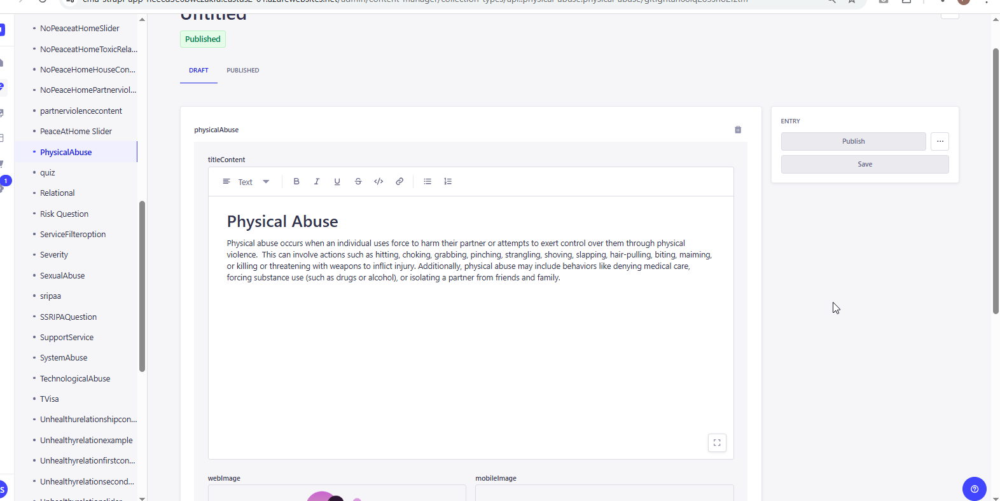 <br>
            <u>a. Sexual Abuse   </u> <br>
            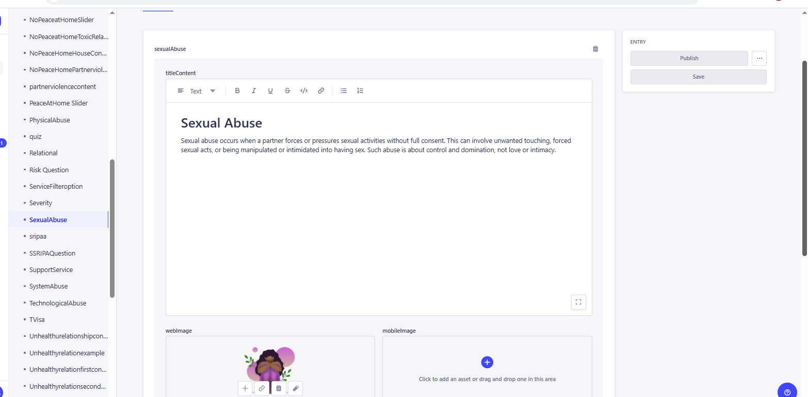 <br>
            <u>b. Emotional Abuse   </u> <br>
            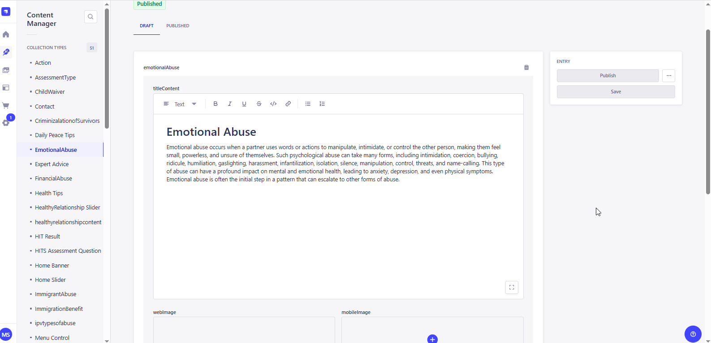 <br>     
            <u>c. Verbal Abuse   </u> <br>
            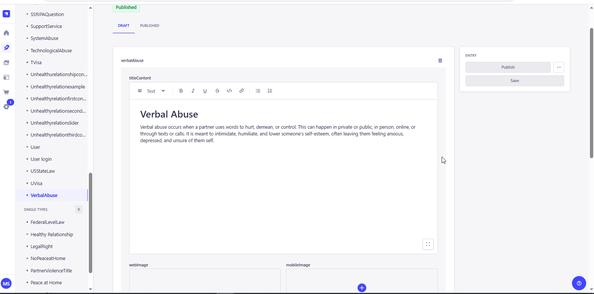 <br>
            <u>d. Financial Abuse   </u> <br>
            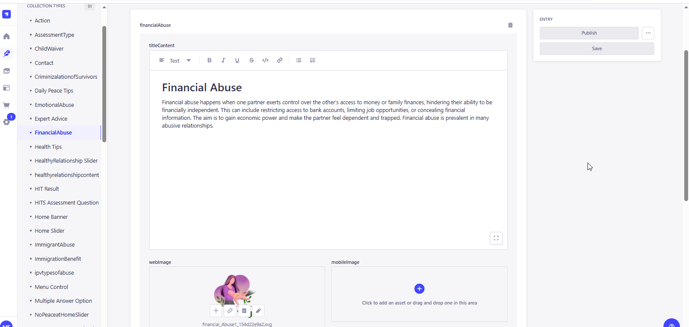 <br>
            <u>e. Technological Abuse  </u> <br>
            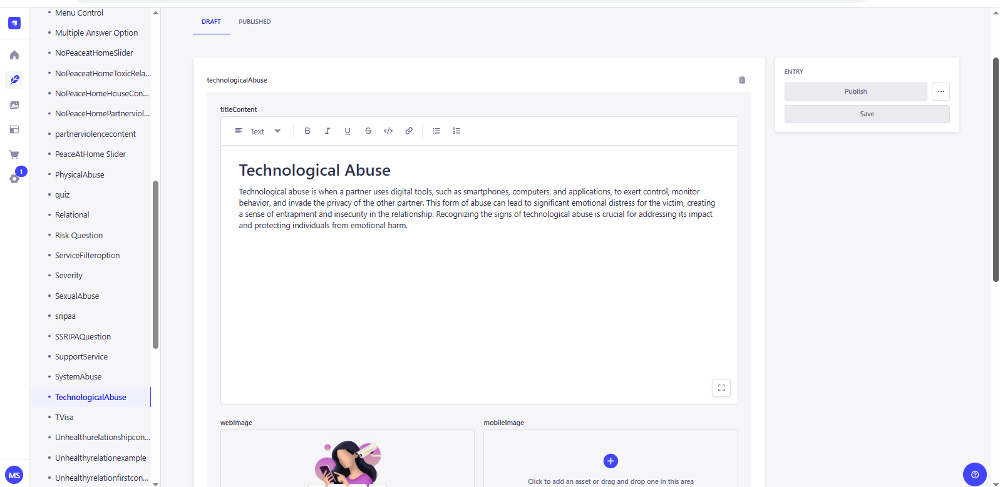 <br>
            <u>f. Immigrant related Abuse  </u> <br>
            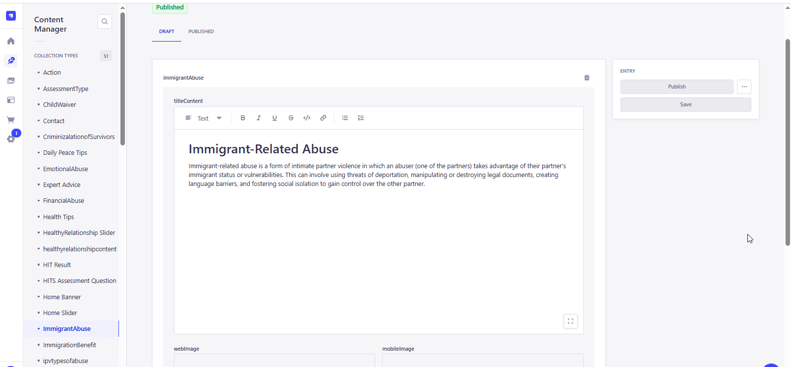 <br>
            <u>g. System Abuse  </u> <br>
            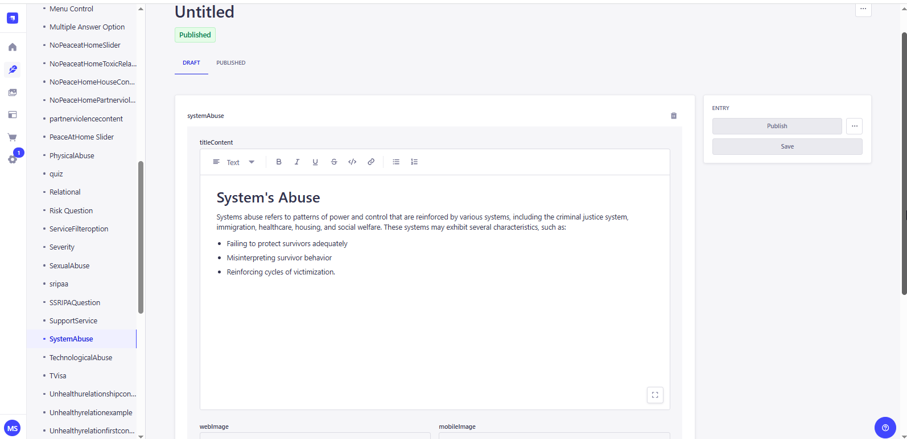 <br>
           Update the content if required and Click on Publish to make the changes refelects in the application. <br>
        </p>                 
</main>